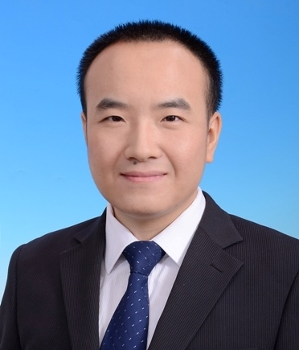

高峰，中国海洋大学，副教授，硕士生导师，YOCSEF青岛2018-2020学术秘书，CCF中国海洋大学学生分会指导主任。2008年获重庆大学软件工程专业学士学位，2015年获北京航空航天大学计算机应用技术专业博士学位。2015年加入中国海洋大学信息科学与工程学院。主要研究领域为数字图像处理与模式识别，具体包括深度学习、变化检测、模式分类、异常检测等。在IEEE GRSL、MTAP、JARS、PCM、IJCNN等期刊和会议发表学术论文30余篇。担任IEEE TGRS、IEEE GRSL、IEEE JSTARS、IJRS等10余个知名国际期刊和会议审稿人。
作为负责人，主持国家自然科学基金、山东省重点研发计划项目、山东省自然科学基金、中国博士后科学基金特别资助项目、中国博士后科学基金面上项目、青岛市博士后应用研究项目、中国海洋大学青年教师科研专项目基金、中国海洋大学博士启动基金等10余科研项目。欢迎优秀的同学加入遥感智能研究小组，一起探索未知的世界，创造知识，享受快乐！
• 课题组主要针对遥感影像和自然图像进行研究，利用人工智能、数据挖掘、模式识别、计算机视觉等领域的技术方法，实现遥感影像和自然图像的高精度、高效解译及分析。
• 课题组理念为“团结勤奋，共同进步”。欢迎对人工智能、大数据分析和图像处理感兴趣的同学加入。
• 本小组最看重是否在“理念”上合拍，特别是你是否真的对研究课题、图像处理与分析感兴趣，是否真的愿意投入200%的热情。
• 联系的最佳方式是EMAIL（gaofeng [at] ouc.edu.cn），通常会在24小时内回复。